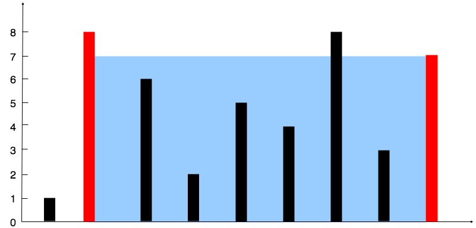

books / hot100 / 03-题解 / 02-双指针
11. 盛最多水的容器
题目与约束
给定一个长度为 n 的整数数组 height 。有 n 条垂线，第 i 条线的两个端点是 (i, 0) 和 (i, height[i]) 。
找出其中的两条线，使得它们与 x 轴共同构成的容器可以容纳最多的水。
返回容器可以储存的最大水量。
说明：你不能倾斜容器。
示例 1：

输入：[1,8,6,2,5,4,8,3,7]
输出：49
解释：图中垂直线代表输入数组 [1,8,6,2,5,4,8,3,7]。在此情况下，容器能够容纳水（表示为蓝色部分）的最大值为 49。
示例 2：
输入：height = [1,1]
输出：1
提示：
n == height.length2 <= n <= 1050 <= height[i] <= 104
核心不变量
移动短板才可能抵消宽度缩小带来的损失。
完整推导
思路推导
-
直觉与痛点（暴力枚举）：
最简单的办法是用两个
for循环，把所有可能的两根线组合都算一遍面积，挑出最大的。痛点：时间复杂度是 O(N2)。当数组很大时，直接超时。我们需要一种能“一次遍历”就找到答案的方法。
-
破局思路（对撞双指针）：
我们把两个指针分别放在数组的最左端和最右端。此时，容器的宽度是最大的。
接下来，我们要向中间收缩指针来寻找其他组合。关键问题来了：该移动左指针还是右指针？
-
逻辑推演（核心推导：为什么要移动短板？）：
- 假设当前左板高
x，右板高y，且x < y（左边是短板）。 - 此时容器的高度受限于短板，即高度为
x。 - 如果移动长板（右指针往左移）：容器的宽度减小了。而高度呢？由于左边的短板
x没动，新容器的高度绝对不可能超过x。宽度变小，高度又不可能增加，所以面积必定减小！这完全是无效操作。 - 如果移动短板（左指针往右移）：容器的宽度虽然减小了，但我们有可能会遇到一根比
x高得多的新木板。只要新木板足够高，就能弥补宽度减小带来的损失，面积就有可能增大！ - 结论：每次只移动两者中较短的那根木板，并不断记录过程中的最大面积。
Java 实现
C++ 实现
实现来源：站内标准实现
class Solution { public: int maxArea(vector<int>& height) { int left = 0, right = (int)height.size() - 1, ans = 0; while (left < right) { ans = max(ans, min(height[left], height[right]) * (right - left)); if (height[left] < height[right]) ++left; else --right; } return ans; } };Python 实现
实现来源：代码随想录（programmercarl.com）
class Solution: def maxArea(self, height): l, r = 0, len(height) - 1 result = 0 while l < r: t = (r - l) * min(height[l], height[r]) result = max(result, t) if height[l] < height[r]: l += 1 else: r -= 1 return resultGo 实现
实现来源：代码随想录（programmercarl.com）
func maxArea(height []int) int { l, r := 0, len(height)-1 result := 0 - 假设当前左板高
class Solution {
public int maxArea(int[] height) {
// 定义双指针，分别指向数组的头和尾
int left = 0;
int right = height.length - 1;
int maxArea = 0; // 用于记录全局最大面积
// 当左指针和右指针相遇时，循环结束
while (left < right) {
// 1. 计算当前的宽度和高度
int width = right - left;
int currentHeight = Math.min(height[left], height[right]);
// 2. 计算当前面积，并更新全局最大面积
int currentArea = width * currentHeight;
maxArea = Math.max(maxArea, currentArea);
// 3. 核心贪心逻辑：谁短，就移动谁
if (height[left] < height[right]) {
left++; // 左边是短板，左指针右移寻找更高的板
} else {
right--; // 右边是短板（或一样高），右指针左移寻找更高的板
}
}
return maxArea;
}
}
复杂度
- 时间复杂度：O(N)。左右指针相向而行，每个元素最多被访问一次，总共执行 N 次面积计算。
- 空间复杂度：O(1)。只需要常数级别的额外空间来存储指针和最大面积变量。
易错点与扩展（可能会被追问）
- 关键追问：“你怎么证明移动短板不会漏掉最优解？”
- 解答模板：这其实是一个“消减搜索空间”的过程。当我们在最外侧计算完面积后，假设左板是短板（索引为
i），右板是长板（索引为j）。因为左板限制了高度，所以左板i和它右边的任意一根板（i+1到j-1）组合，面积都绝对不可能超过i和j的组合（宽度更小，高度最多不变）。 - 既然i已经不可能创造出更大的面积了，我们就把i这个选项彻底淘汰（left++），这就相当于一次性排除了剩余的所有无效组合，绝对不会漏掉最优解。 - 细节追问：如果左右板一样高怎么办？
- 解答：随便移动哪一个都可以，或者两个一起移动（
left++且right--）。因为如果它们俩一样高，中间无论有什么板子，受限于这两根边缘板的高度限制，和其中任何一根单独组合的面积都不可能大于它们俩直接组合的面积。所以这两根板子的使命已经结束了，都可以淘汰。